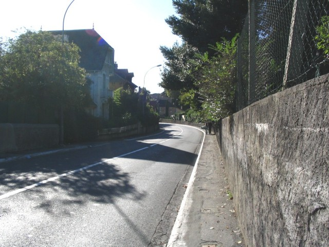
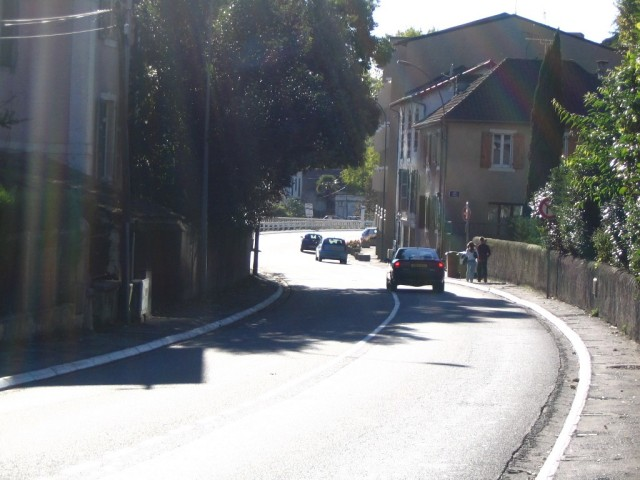
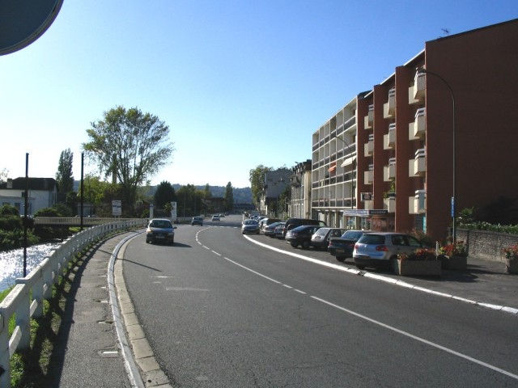
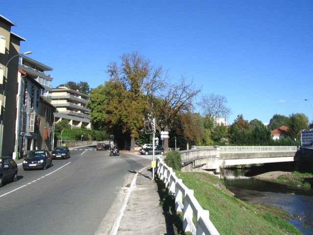
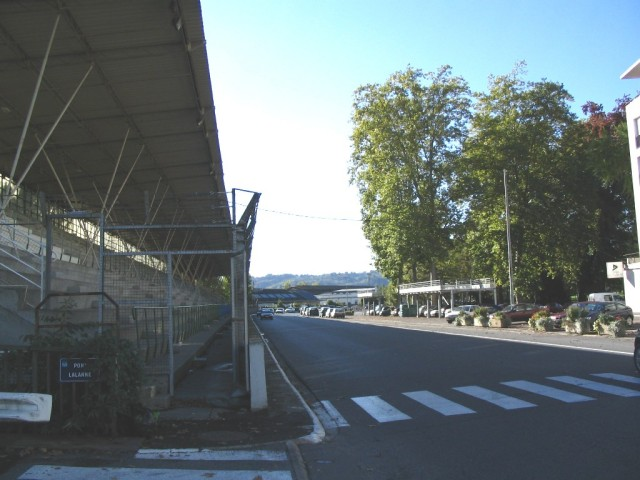
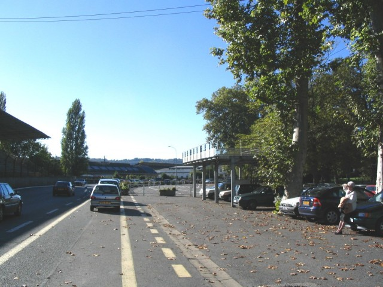
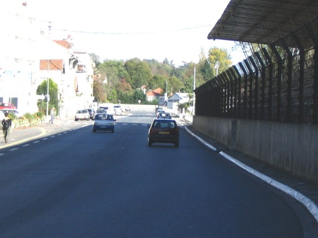

Numbers on map indicate the location of where the photographs were taken.
Pau - Ave. Gaston Lacoste (Page 5 of 5)
|| Contents || La Gare | Pont Oscar & Lycée | Casino & Foch | Bussion & Chicane | Ave. Gaston Lacoste || Home
Numbers on map indicate the location of where the photographs were taken.
Return to racingcircuits.net's Photo Archive Main Index

24 - Exit of the chicane. It's time to take
full speed.

25 - The very fast esse leading to the final
straight. Slightly downhill.

26 - Avenue Gaston Lacoste
is the final straight. The grandstand is in the background. On the left, the Heid canal.

27 - Same place looking back. The bridge
over the canal should have been the final part of the 2004
extension proposal; the first part at the chicane crossroad.

28 - Grandstand and pit. Pont Lalanne
(bridge at left) is the access to the second paddock, in the back of the grandstand.

29 - Pit lane (yellow paint).

30 - End of the straight looking back.
Photographs & text ©Michel Marti. Reproduced here with kind permission.